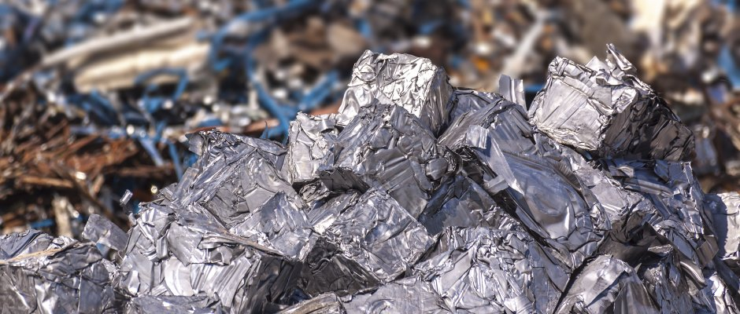
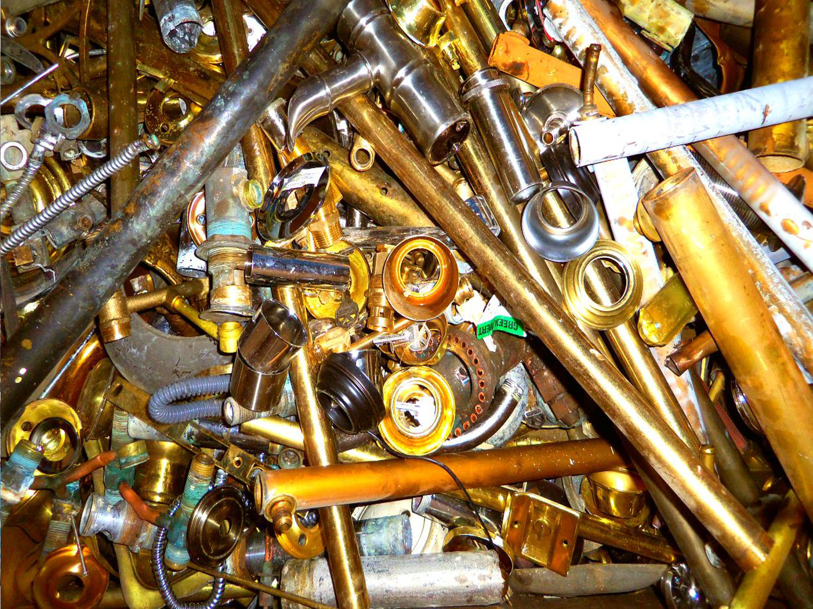

Preduzeće ECO EXPORT d.o.o. je osnovano 07. jula 2008. godine. U početku kao mala porodična firma ECO-EXPORT d.o.o. je radio sa ograničenim kapacitetom, međutim kako je vreme prolazilo usled maksimalne posvećenosti članova rezultati nisu izostajali i danas sa pravom možemo reći da smo jedna stabilna firma od poverenja kada su u pitanju poslovi upravljanja i transporta sekundarnih sirovina.  Posedujemo sve neophodne dozvole za rukovanje i transport neopasnog otpada i opasnog električnog i elektronskog otpada. 2017. godine smo uspešno završili uvođenje sistema menadžmenta kvalitetom prema ISO 9001:2015 i sistema menadžmenta životnom sredinom u skladu sa zahtevima standarda ISO 14001:2015.
